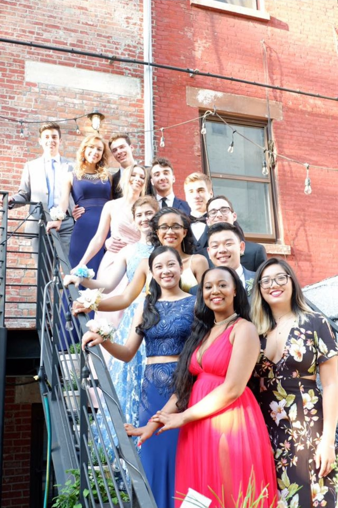

This was taken the last day of my freshman year by my mom.
Luna Smiling
This was taken by my sister after taking her for a walk. She's about 4 months old here!
My Mom & Me
This was taken the last day of my freshman year by my dad. Same picture as before, there just wasn't anyone there to take a picture of all of us.
Chem 2150 Lab
Possibly the most frustrating lab I've ever been in. Made me want to quit chem- but the squat was on point.
Me & my Buddies by Fort Totten
Anastasios's cousins took this. Tim posted it to the gram before me so that's why it's here. My zipper is undone and the resolution is off but it made its way onto my Tinder.
Fort Totten Shoot
This pose was a little weird, but it made the cut.
Baby Goldy
One of the oldest pictures I have of Goldy as a pup. Her stare was profound, as always.

Maddy's Prom Staircase
Taken by someone's parent- this was awkward but I looked like a wholesome lad. Didn't have a date but still killed it.
Valentina's look of Approval
Taken in Valentina's family member's house in Fusagasuga.
Valentina, Julia & Sara
Beautiful town, Beautiful day, Beautiful people.
SHPE Snowtubing Outing
Jesse, Dani, Tania, Me and Luis Verdi had a great outing. Was a spontaneous decision that paved the way for the creation of incredible friendships during freshman year.
La Cabaña Alpina
This was taken by Valentina's mom Claudia. We ate well that day and bantered a lot. This was in Sopó.
Brandy Asleep
Finally a lapse in hyperactivity.
Carrera 26
This was taken from Tia Flor's 14th floor apartment. It was a risky flick but worth it.